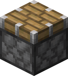
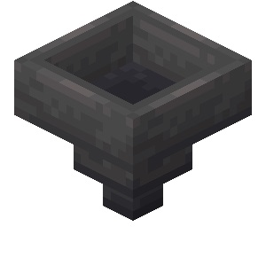
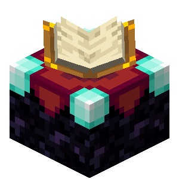
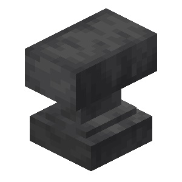

Vários itens podem ser criados no Minecraft e por isso grande parte dos jogadores acabam por ficar perdidos com essa variedade, principalmente os iniciantes. Por isso, fiz esse "guia" para ajuda-los. Basta clicar no item que desejar abaixo
 Pistão  Funil Mesa de encantamentos Bigorna